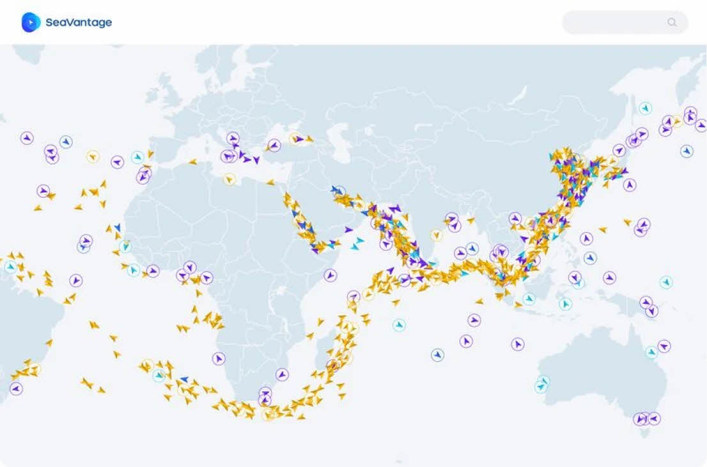
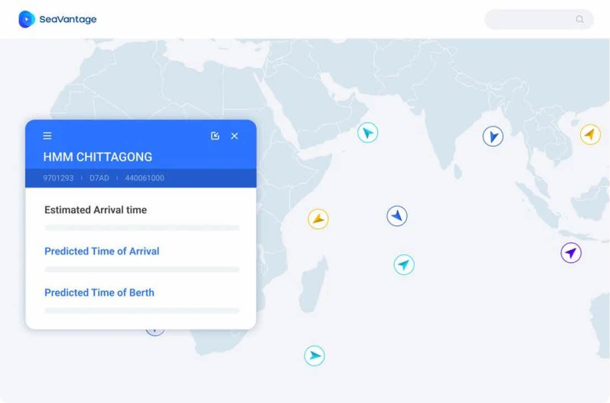
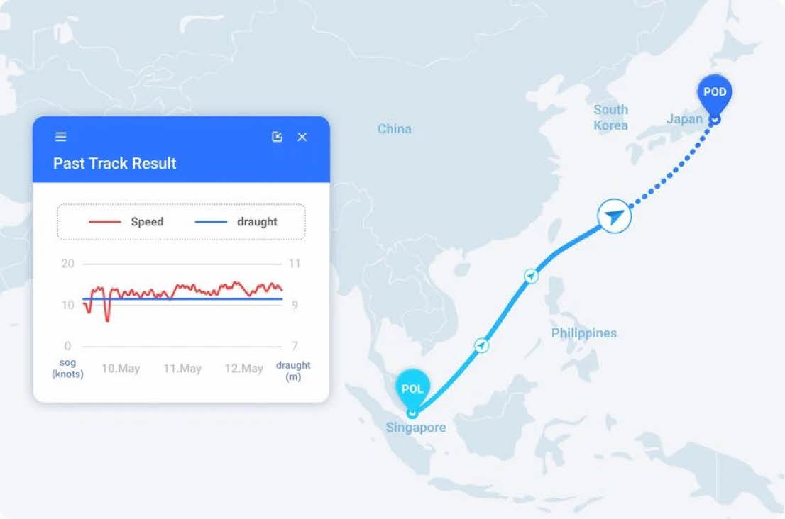
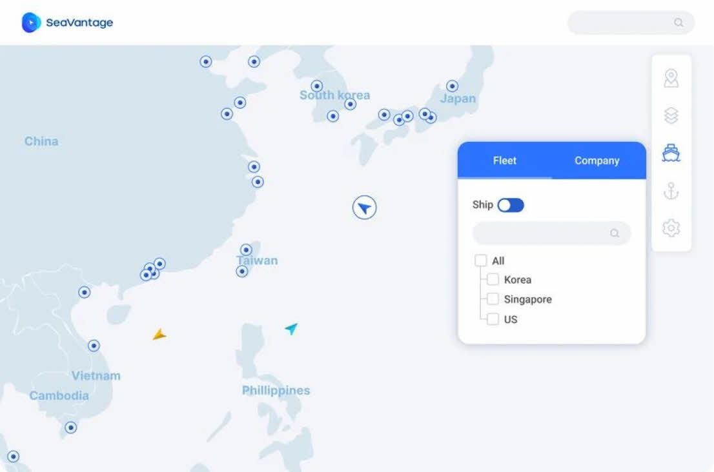

Ship Insight
신뢰도 높은 AIS를 통해 정확한 도착시간과 항로를 예측합니다.
씨벤티지만의 예측 가시화 서비스와 함께
실시간 선박의 위치를 확인해보세요.
-

실시간으로 항구 작업 현황 및
혼잡도를 확인하세요작업중인 선박들과 평균 작업시간을 터미널/선종 단위로
확인할 수 있어 하역 이후 일정을 효율적으로 계획할 수 있습니다. -

정확한
도착시간예측자체 개발한 해상항로 네트워크, MTN(Maritime Traffic Network)을
활용하여 선박의 종류와 크기에 따라 항해 경로를 시각화하여 보여줍니다.
PTA(Predicted Time of Arrival), PTB (Predicted Time of Berth)라는
새로운 기준으로 선박의 도착시간 및 접안시간을 정확하게 예측합니다. -

과거 항적 조회 및
항로 예측선박의 과거 움직임 정보로부터 많은 분석 정보를 얻을 수 있습니다.
과거의 항로와 Port Call, Speed vs Draft를 조회할 수 있으며
선종과 선박 사이즈에 따른 정밀한 Routing을 통해
신뢰할 수 있는 항로 예측 서비스를 제공합니다. -

신뢰도 높은 AIS를 경험해 보세요.
위성, 육상 그리고 Dynamic까지 모든 AIS 데이터를 활용하여
신뢰할 수 있는 정보를 제공합니다.
선박의 실시간 위치정보와 AIS에 포함된
선박 기본 제원 정보 및 항해 정보를 확인할 수 있습니다.
씨벤티지만의 선박 분석 데이터로
새로운 인사이트를 확인해보세요!
-
선박 타입 및 사이즈
씨벤티지는 정교한 선종 & 사이즈 구분을 통해 정확한 정보를 제공합니다.
-
AIS 커버리지
위성, 육상 그리고 Dynamic까지 모든 AIS 데이터를 제공합니다. 오류 데이터의 예외 처리 과정을 거친 신뢰도 높은 AIS 서비스를 경험해보세요.
-
선박 라우팅
항해 중에 목적지가 바뀐 선박에 대해서도 맞춤형 Point to Port 라우팅과 도착시간 예측정보를 제공합니다.